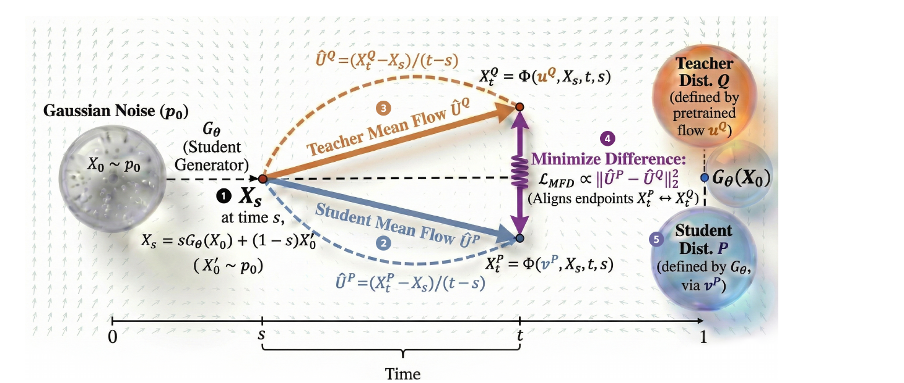
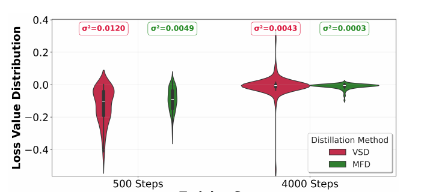

MFD: 不比「瞬时速度」比「平均速度」——把时间积分当低通滤波器, 给 flow matching 蒸馏降方差

1. 出发点 (Motivation)
Flow Matching(FM)已经是图像 / 3D / 4D 生成的主力范式:它直接学一个速度场 \(v(x,t)\), 把噪声分布沿 ODE 搬到数据分布。问题只有一个 —— 推理要一步步解 ODE, 慢。模型越大, 这个延迟越吃不消。
加速的正统答案是蒸馏:把多步教师压成一步 / 几步的学生。但今天几乎所有蒸馏方法(DMD、VSD、Diff-Instruct、SwiftBrush……)都是为 score-based 扩散模型设计的。要把它们套到 FM 上, 得先把 FM 的速度场 \(v(x,t)\) 硬转成一个 score 函数:
—— 翻译: 把「速度」除以 (1−t)² 换算成「分数(score)」。麻烦在于:当 t→1(接近数据端), 分母 (1−t)² → 0, 任何速度估计误差都会被放大成天文数字, 梯度方差爆炸。而且这个换算是在随机独立采样的单个时刻上做匹配, 把 FM 本来显式学到的「确定性 ODE 轨迹」结构全丢了。
作者的诊断很直接:这种「转 score + 单时刻匹配」是错配。它继承了 score matching 的两个病:(1) 单个时刻的速度估计本来就是高频噪声, 直接拿去算梯度 → 方差大、训练曲线剧烈震荡;(2) 丢掉了 FM 的全局轨迹一致性。
MFD 的出发点因此是一句反问:既然 FM 学的就是速度场, 为什么不直接在速度空间里比?而且, 为什么非要在一个瞬时的点上比, 不能在一段区间上「取平均」再比? 后半句才是全文的题眼 —— 把「瞬时」换成「区间平均」, 相当于给噪声信号加了个低通滤波器。
Flow Matching (FM)
直接回归一个速度场 v(x,t), 把噪声沿常微分方程 (ODE) 连续地搬成数据的一类生成模型。
瞬时速度 (instantaneous velocity)
某一个时刻 t、某一个点 x 上, 轨迹的切线方向。单点、易受局部扰动。
平均速度 / Mean Flow (AVF)
一段区间 [s,t] 上的净位移除以时间跨度 (ψt−ψs)/(t−s)。是瞬时速度沿时间的积分平均。
VSD (变分分数蒸馏)
用教师当 score 先验、再训一个辅助模型估学生的 score, 靠两个 score 之差给学生梯度。单时刻、高方差。
辅助流模型 vP
因为学生是「一步生成」不给轨迹信息, 需要临时训一个流模型去逼近学生当前分布 P 的速度场。只在训练用, 推理丢弃。
TTUR (双时标更新)
辅助模型更新得勤、学生更新得慢 (论文说 10:1), 保证辅助模型能跟上不断变化的学生分布。
2. 方法 (Method)
这一节按「问题 → 地基定理 → 为什么不够 → 主定理 → 定量收益 → 一个绕不开的必需品 → 怎么求梯度 → 代码落地」的顺序, 把整条推导链拆到底。每一步都回答一个「为什么必须是这样」。
2.1 病根:把 flow 硬掰成 score, 错在哪
先看现有 score 蒸馏(VSD/DMD)的骨架。它们的目标是最小化学生分布 \(p_1\) 与教师分布 \(q\) 的 KL 散度, 而这个 KL 可以按噪声层级 \(t\) 展开:
—— 翻译: 「让最终生成分布贴近教师」这件难事, 被拆成「在每一个加噪层级 t 上, 让加噪后的学生分布贴近加噪后的教师分布」。这样才能对 t 逐层给监督。
对它求梯度, 会落到两个分布的 score 之差上:
—— 翻译: 梯度 = (学生 score − 教师 score) × (Xt 对参数的导数)。教师 score 用预训练模型估, 学生 score 得再训一个辅助模型估。问题是:flow 模型学的是速度场 v, 不是 score, 得先换算。
而把 flow 的速度场换算成 score, 用的是这个关系:
—— 翻译: score ≈ −速度 / (1−t)²。两个致命伤:① 当 t→1(接近数据端), 分母 (1−t)²→0, 速度估计的任何误差被放大成天文数字, 梯度方差爆炸;② 换算是在随机独立采样的单个时刻上做的, 把 flow 显式学到的「确定性 ODE 轨迹」结构整个丢了。
结论:错配的根源是「绕道 score + 单时刻匹配」。既然 flow 本来就学速度场, 就应该直接在速度空间比, 而且要想办法用上整条轨迹。下面从地基开始搭。
2.2 地基定理 4.1:速度场处处相等 ⇒ 分布相等
第一块砖:证明「直接比速度场」是合法的 —— 只要学生和教师的瞬时速度场处处相等, 两者分布就必然相等。
—— 翻译: 若「学生速度场 vP 与教师速度场 uQ 的期望 Bregman 散度」为零, 则学生分布 P = 教师分布 Q。D 是严格正定的 Bregman 散度(D(x,y)=0 当且仅当 x=y, ℓ₂ 距离就是一例)。
证明的来龙去脉(C.1), 两步:
第一步 —— 从「期望为零」逼出「处处相等」。 \(\mathcal{L}_{IVF}\) 是一个非负量(\(D\ge 0\))的期望, 期望为零 ⇒ 被积项几乎处处为零。再叠加三个条件:时刻分布 \(U[0,1]\) 有全支撑(每个 \(t\) 都被采到)、\(p^P_t\) 是流真实覆盖的密度、速度场 Lipschitz 连续(不会突变), 于是可以断定在整个支撑集上
—— 翻译: 不是「平均相等」, 而是「每一点、每一时刻都相等」。全支撑 + Lipschitz 是把「积分为零」升级成「逐点为零」的关键 —— 少了它们, 可能只在测度零的集合外相等。
第二步 —— 从「速度场相等」逼出「分布相等」, 靠 ODE 唯一性。 学生轨迹 \(\psi^P_t\) 满足自己的 ODE \(\frac{d}{dt}\psi^P_t = v^P(\psi^P_t,t)\);但因为 \(v^P=u^Q\) 处处成立, 它同时也满足教师的 ODE。由 Picard–Lindelöf 定理(Lipschitz 条件下 ODE 解唯一), 同一初值 \(X_0\) 出发的两条轨迹必须完全重合:\(\psi^P_t(X_0)=\psi^Q_t(X_0)\)。对所有 \(X_0\sim p_0\) 成立, 终点分布(pushforward)就相等:\(P=(\psi^P_1)_\#p_0=(\psi^Q_1)_\#p_0=Q\)。∎
—— 直觉: 两辆车速度表每一秒读数都一样、起点也一样, 那它们走的路线必然分毫不差、终点必然重合。ODE 唯一性就是这句话的数学版。
2.3 为什么瞬时匹配不够:它是个「全通滤波器」
定理 4.1 合法, 但直接照它做 = VSD, 会很抖。信号处理视角(B.3)一句话点破。把教师给的监督信号拆成「真信号 + 噪声」:
—— 翻译: 教师速度 = 理想的传输语义 v*(低频、真正有用) + 高频抖动 ξ(来自优化随机性、mini-batch 噪声、流形局部曲率)。ξ 是没意义的噪声。
瞬时匹配强迫学生在每一个瞬间都复现 \(S(t)\) —— 连噪声 \(\xi(t)\) 一起复现。用滤波器的话说, 这是个全通滤波器(all-pass):高频噪声一点不滤, 全塞给学生去拟合。结果就是梯度高方差、过拟合到与全局传输无关的局部抖动。这正是要改的地方 —— 我们需要一个低通滤波器, 把 \(\xi\) 磨掉、只留 \(v_*\)。
2.4 主角登场:平均速度场 = 时间维度的低通滤波器
怎么造低通滤波器?对时间积分。定义平均速度场 (Average Velocity Field, AVF):
—— 翻译: 平均速度 = (终点位置 − 起点位置)/(时间差), 等价于「全程平均时速 = 总路程 ÷ 总时间」。它不管中途怎么加速减速(高频抖动), 只认两端。
为什么这就是低通滤波器? 把信号分解代进去:
—— 翻译: 算子 (1/Δt)∫(·)dτ 就是一个「移动平均 / 矩形窗(boxcar)滤波器」。它在频域的幅频响应是 |sinc(f·Δt)|, 随频率 f 以 1/f 衰减 —— 高频的噪声 ξ 被狠狠压制, 低频的真信号 v* 基本保留。这就是数学意义上的低通。
一个具体数字例子:设 \(s=0.2,t=0.4\)。瞬时速度因 mini-batch 噪声一会儿 1.0、一会儿 −0.3、一会儿 0.8(高频抖);但两端位置一旦定了, 平均速度就是一个稳定的数(比如 0.5)。拿 0.5 当监督, 远比拿那串抖动值稳。此外它还有几何意义:匹配平均速度 = 匹配位移向量 = 强制全局轨迹一致(相位对齐), 而不是脆弱的局部切线对齐。
2.5 主定理 4.3:平均速度匹配 ⇒ 分布相等(且 VSD 是其退化特例)
现在把「匹配平均速度」也升级成分布保证:
—— 翻译: 只要在「有全时间支撑」的区间分布 p(s,t) 上, 学生与教师的平均速度处处相等, 学生分布就严格等于教师分布。
证明用反证法(C.2), 思路很漂亮:
假设结论不成立 —— 存在正测度集合 \(\Omega\), 其上 \(v^P\ne u^Q\)。由 Lipschitz 连续, 「一点不等」必然「一个邻域都不等」:存在一个半径 \(\epsilon>0\) 的小球 \(B_\epsilon\), 其上严格 \(v^P\ne u^Q\)。关键一跳:
—— 翻译: 两个连续函数若在某点被「严格拉开」, 它们在该点附近任意小区间上的平均值也不可能相等。也就是说, 瞬时不等 → 短区间的平均速度也不等。这一步把「瞬时的矛盾」传导到了「平均速度的矛盾」。
于是在这块区域上 \(D(U^P,U^Q)>0\)(严格正定);又因 \(p(s,t)\) 有全支撑, 会给这块区域分配正概率质量, 积分起来:
—— 翻译: 这与前提「LMFD=0」直接矛盾。所以假设错误, 只能 vP=uQ 几乎处处成立 —— 再调用定理 4.1, 立刻得到 P=Q。∎
最妙的收尾 —— VSD 是 MFD 的退化特例。 当区间缩成一点(\(s\to t\)), 平均速度按定义退回瞬时速度。所以「匹配所有区间的平均速度」这个更强的条件, 蕴含「匹配处处的瞬时速度」。换句话说:
—— 翻译: MFD 是更一般的框架, VSD 只是它把区间捏成一个点的极限。既然更一般、又多了低通滤波的降方差红利, MFD 严格不亏。这个「⊇」关系是全文的骨架。
2.6 定量收益:方差按 1/K 缩小(这才是硬证据)
前面说「低通滤波降方差」是定性的, C.3 把它算成了一个干净的数。设神经网络对真速度的估计是无偏 + 零均值噪声:\(\hat v=v+\xi,\ \mathbb{E}[\xi]=0,\ \text{Cov}[\xi]=\sigma^2 I\)。
VSD 一侧:梯度直接正比于单点估计误差, 方差被单次前向的噪声钉死, 单步计算无从降低:
—— 翻译: VSD 的梯度方差 ≈ 2σ²(学生、教师各贡献一份 σ²), 是单次前向噪声的量级, 无论怎么算单个时刻都压不下去。
MFD 一侧:平均速度用 \(K\) 步欧拉积分近似, 误差项变成 \(K\) 个 IID 噪声的平均:
—— 翻译: K 个独立噪声取平均, 方差从 σ² 掉到 σ²/K(标准的「平均降方差」)。于是 Var(gMFD) ∝ (1/K)·Var(gVSD)。
结论一句话:\(\text{Var}(g_{MFD})\propto\frac1K\text{Var}(g_{VSD})\), 其中 \(K\approx(t-s)/\Delta\tau\)。\(K=1\) 时 MFD≈VSD(没有平均、没红利);\(K>1\) 才有 \(1/K\) 的降方差。这也解释了 §3.4 那个反直觉的消融:ODE 步长不是越小越好 —— 步长太小虽然 \(K\) 大, 但累积数值误差反噬;步长太大 \(K\to 1\) 退回 VSD。0.02–0.03 是甜点。Fig 2 的小提琴图就是这个 \(\sigma^2/K\) 的经验落地。
2.7 一个绕不开的必需品:辅助模型为什么是「理论必需」而非「工程便利」
这是全文最容易被读者忽略、却最深的一环。学生是一步生成器, 不提供轨迹信息, 那「学生的速度场 \(v^P\)」从哪来?
最省事的错误做法:直接用条件速度场。在线性插值 \(X_t=(1-t)X_0+tX_1\)(其中 \(X_1=G_\theta(X_0)\))上, 条件速度就是常数 \(X_1-X_0\)。听起来很直接 —— 但实测500 步内训练崩溃, 生成一团模糊。为什么?
—— 翻译: 同一个中间点 Xt, 可以由很多不同的 (X0,X1) 对插值而来 —— 条件速度在 Xt 处是多值的。而定理 4.1 要求速度场是「每个 (Xt,t) 对应唯一一个向量」的单值边际场。多值的东西根本不是合法速度场。
崩溃的机理(Prop C.1):若强行让条件速度去匹配教师边际速度, 即要求 \(X_1-X_0=u^Q(X_t,t)\) 对所有 \(t\) 成立 —— 但左边与 \(t\) 无关(只由 \(X_0\) 定), 右边随 \(t\) 变化, 除非教师速度沿轨迹恒定(一般不可能)。优化器为了硬凑这个不可能方程, 会把 \(G_\theta\) 推成与输入 \(X_0\) 无关的常数映射:
—— 翻译: 学生分布塌缩成一个点(教师分布的均值), 彻底的 mode collapse。这就是实测「500 步崩成模糊」的数学解释。
所以辅助流模型 \(v^P\) 是理论必需:它在学生样本上做 FM 回归, 学的正是那个单值的边际速度场 \(\mathbb{E}[X_1-X_0\mid X_t]\)(回归的最优解就是条件期望), 从而满足定理 4.1、保证 \(P=Q\)。这也是为什么要 TTUR 交替 —— 学生一直在变, 辅助模型得频繁更新才能追上当前的学生边际分布。
repo/t2i_SANA/scripts/train_sana_mfd.py:L1424-L1435 — 辅助流模型 v^P 的标准 flow-matching 回归, 学的是边际速度 E[X1−X0|Xt]
noise_pred = noise_pred.float()
target = noise_for_Z - Z.float() # 速度目标 = noise − 学生样本(SANA 反时间约定)
loss_aux = torch.nn.MSELoss()(noise_pred, target).float()
accelerator.backward(loss_aux)
...
optimizer_aux.step()
2.8 怎么求梯度:精确式、SDS 近似、与「只动优化轨迹不动不动点」
有了合法的 \(v^P\), 平均速度用 ODE 积分器 \(\Phi\) 数值近似(两端位移比):
—— 翻译: 用固定步长(代码 0.02)欧拉积分把 v 从 Xs 推到 t, 得端点; 平均速度 = (端点 − Xs)/(t−s)。辅助与教师各算一份, 得 ÛP、ÛQ。
精确梯度要穿过 ODE 求解器反传:
—— 翻译: 中间那个 ∇XsΔ 需要对「ODE 求解器输出关于输入 Xs 的雅可比」求导 —— 要反传穿过整个多步积分图, 又贵又数值不稳。
SDS 式近似:把 \(\hat U^P,\hat U^Q\) 当成固定引导目标, 令 \(\nabla_{X_s}\Delta\approx I\), 只让梯度经 \(X_s\) 回流:
—— 翻译: 梯度 ≈ 学生输出的雅可比 × 两条平均速度之差 × 系数 s。两条平均速度整段用 no_grad 前向算出、detach 掉, 不反传穿 ODE —— 这也是多步积分不爆显存的原因(积分只前向、原地覆盖 buffer, 显存 O(1) 不随步数涨)。
为什么敢这么近似? B.6 给了两条理由:① 经验证据 —— 在 1 万步上对比「带完整雅可比」vs「恒等近似」的梯度, 幅度差不多, 但方向剧烈发散(余弦相似度分布很宽、甚至为负);穿 ODE 反传引入高阶依赖与数值不稳, 把梯度方向带偏, 训练直接失败。② 理论边界 —— 这个近似只影响优化轨迹, 不影响不动点:定理 4.3 说的是「若平均速度精确匹配则 \(P=Q\)」, 这个不动点条件与雅可比近似无关。所以它是「到达稳定解的工程装置」, 不改变要求解的分布对齐条件本身。代码把上式实现成一个伪损失:
repo/t2i_SANA/scripts/train_sana_mfd.py:L1576-L1584 — MFD 学生更新核心损失, 对应 Eq (20) 的 detached-target 形式
# Compute regular loss.
dist_loss = ((u_q - u_p) * x_t).mean()
loss_stu = dist_loss
accelerator.unwrap_model(transformer).set_adapter("default")
accelerator.backward(loss_stu)
u_q、u_p 是两条平均速度(no_grad 算出、已 detach), x_t 依赖 \(\theta\)。反传梯度 \(=(u_q-u_p)\cdot\partial x_t/\partial\theta\), 正是 Eq (20)。(SANA 用「t=1 噪声、t=0 数据」的反时间约定, 符号与论文 \((\hat U^P-\hat U^Q)\) 差一个约定号, 数值一致 —— 唯一要留神处。)
2.9 算法全景与「VSD = 退化特例」的代码铁证
把整条链装进 Algorithm 1 的交替循环:
三模型一骨架
学生 = LoRA「default」;辅助流 = LoRA「aux」;教师 = 关掉两适配器的原始 backbone。三者共享同一 transformer, 只切适配器。这就是「轻量 adapter」(§5.3): SANA 1.6B 上辅助仅 rank-64 LoRA、~34M 参数 (<2.2%)。
交替更新 (TTUR)
每轮先更新辅助 K 步(学生样本上做 FM 回归, §2.7), 再更新学生 1 步。§2.7 已证:辅助必须追上不断漂移的学生边际分布, 否则 vP 失效。
教师平均速度
Φ(uQ) 多步欧拉积分(§2.8), no_grad, CFG=4.5 硬编。区间越宽积分步 K 越多 → 降方差越强(§2.6)。
ODE 步长 0.02
§2.6 的 K≈(t−s)/Δτ 直接解释:太小累积数值误差, 太大 K→1 退回 VSD。0.02–0.03 甜点。
教师平均速度的积分实现(辅助那一份同构):
repo/t2i_SANA/scripts/train_sana_mfd.py:L1546-L1574 — 固定步长欧拉 ODE 积分算教师平均速度 Û^Q, 对应 §2.8 的 Φ
denoise_steps = math.ceil((t.item() - r.item()) / args.ode_step_size) # K ≈ (t−s)/Δτ
timesteps_intervals = torch.linspace(t.item(), r.item(), denoise_steps + 1)
timestep_pairs = list(zip(timesteps_intervals[:-1], timesteps_intervals[1:]))
x_t_raw_input = x_t
for t_start, t_end in timestep_pairs: # 整段在 torch.no_grad() 里
teacher_pred_noise = transformer(hidden_states=torch.cat([x_t_raw_input]*2),
timestep=torch.cat([t_start]*2) * 1000.0, ...)[0]
tp_uncond, tp_text = teacher_pred_noise.chunk(2)
teacher_pred_noise = tp_uncond + 4.5 * (tp_text - tp_uncond) # CFG=4.5 硬编
x_t_raw_input = x_t_raw_input - (t_start - t_end) * teacher_pred_noise # 一步欧拉, 原地覆盖
u_q = (x_t - x_t_raw_input) / (t - r) # 位移 / 时间跨度 = 平均速度 Û^Q
最能体现「MFD ⊇ VSD」(§2.5 的核心)的, 是代码里那个连续开关。采样区间端点 \((t,r)\) 时的比例参数, 注释写死了语义:
repo/t2i_SANA/scripts/train_sana_mfd.py:L604-L609 — 一个标量在 MFD 与 VSD 之间连续切换
parser.add_argument(
"--r_not_equal_t_ratio",
type=float,
default=1.0,
help="1.0 -> MFD, 0.0 -> VSD",
)
ratio=0.0 → 所有样本 \(r=t\)(区间缩成点), 走 t.item()==r.item() 分支:单步瞬时、不积分, 这就是 VSD(\(K=1\))。ratio=1.0 → 真正在区间上积分(\(K>1\))。同一份代码, 一个标量从 0 调到 1, 就把 §2.5 的极限 \(\lim_{s\to t}\text{MFD}=\text{VSD}\) 变成了可运行的连续谱 —— 这是整条推导链最干净的工程注脚。
3. 实验结果 (Key findings)
3.1 降方差:直接把 loss 分布画出来

3.2 4D 占据预测(OccFM / nuScenes):单步逼近 10 步教师
自动驾驶的 4D 占据预测是个高维、强动态的硬测试床。教师、辅助、学生都从同一预训练 OccFM checkpoint 初始化。
| 模型 | NFE ↓ | IoU ↑ (%) | mIoU ↑ (%) | FPS ↑ |
|---|---|---|---|---|
| OccFM (教师) | 10 | 37.52 | 28.49 | 12.72 |
| OccFM (教师) | 1 | 27.42 | 8.15 | 24.92 |
| Diff-Instruct (VSD) | 1 | 36.41 | 26.42 | 25.21 |
| CD | 1 | 31.69 | 20.70 | 25.08 |
| AYF | 1 | 32.38 | 21.69 | – |
| DMD2 | 1 | 35.84 | 24.27 | 25.11 |
| SenseFlow | 1 | 35.40 | 23.91 | 25.09 |
| MFD (本文) | 1 | 37.07 | 27.25 | 25.19 |
- 单步 MFD 几乎追平 10 步教师:IoU 只掉 1.2%(37.07 vs 37.52)、mIoU 掉 4.4%, 而 FPS 从 12.72 → 25.19(约 10× 加速)。
- 全面压过所有蒸馏基线:比一致性方法 AYF 高 4.69 IoU / 5.56 mIoU;也稳超 DMD2、SenseFlow。作者点名:VSD 单时刻高方差、CD/AYF 的样本级自一致约束对多模态数据太死板, 而 DMD2/SenseFlow 靠对抗判别器带来训练不稳。
- 所有单步方法推理速度都 ≈25 FPS —— 辅助模型只在训练用, 推理零额外开销。
3.3 文生图(SANA 1.6B):4 步, FID 从 43.68 砍到 33.28
| 模型 | NFE ↓ | Aesthetic ↑ | PickScore ↑ | HPSv2 ↑ | ImageReward ↑ | CLIP ↑ | FID(DINOv2) ↓ |
|---|---|---|---|---|---|---|---|
| SANA (教师) | 20 | 6.335 | 0.2021 | 0.2417 | 0.8363 | 30.72 | – |
| SANA (教师) | 4 | 5.976 | 0.1872 | 0.2173 | −0.1008 | 28.25 | – |
| AYF | 4 | 6.231 | 0.1963 | 0.2298 | 0.7022 | 29.18 | 43.68 |
| Diff-Instruct | 4 | 6.453 | 0.1985 | 0.2434 | 0.7677 | 29.39 | 37.55 |
| DMD2 | 4 | 6.495 | 0.2004 | 0.2439 | 0.8017 | 29.24 | 36.13 |
| SenseFlow | 4 | 6.482 | 0.1998 | 0.2445 | 0.7925 | 29.32 | 35.97 |
| MFD (本文) | 4 | 6.541 | 0.2002 | 0.2442 | 0.8483 | 29.43 | 33.28 |
- MFD 拿下 Aesthetic、ImageReward、CLIP、FID(DINOv2) 四项最优, PickScore / HPSv2 与最强基线只差毫厘。
- FID(DINOv2) 43.68 → 33.28(对教师样本的分布贴合度), 印证「分布级平均速度对齐 > 样本级一致性约束」。
- DMD2 / SenseFlow 在 PickScore/HPSv2 上略高, 但它们额外挂了感知损失或对抗训练 (GAN);MFD 纯靠分布匹配就做到, 且这些额外组件是可叠加的正交增益。
3.4 ODE 步长消融:粗一点反而稳
| ODE 步长 | IoU ↑ (%) | mIoU ↑ (%) |
|---|---|---|
| 0.001 | 36.28 | 25.91 |
| 0.005 | 37.12 | 27.14 |
| 0.02 | 37.07 | 27.25 |
| 0.1 | 36.82 | 26.47 |
| 0.5 | 36.74 | 26.54 |
非单调:太小 → 积分步太多、累积数值误差;太大 → 步数太少、抓不住轨迹曲率、退化成 VSD 丢掉降方差红利。0.02–0.03 的「粗积分」是甜点 —— 作者解释为「更粗的积分反而把噪声速度平均得更狠」。训练成本 ~25 GPU 时、~20GB(RTX PRO 6000), 与 VSD 相当, 显存远小于要额外训判别器的 DMD2(~50GB)。
4. 实现细节 (Implementation)
跑过代码后, 有几处「方程里看不到、但决定成败」的工程细节, 以及若干论文 vs 代码的出入:
-
三模型共享一个 backbone、靠两个 LoRA 适配器区分(
train_sana_mfd.py:L1040-L1042)。transformer.add_adapter(..., "default")是学生、"aux"是辅助流模型;教师 =set_adapters([])关掉两者的原始权重。这就是「辅助模型只需轻量 adapter」的落地方式 —— 一份 1.6B 权重, 挂两组 rank-64 LoRA。 -
辅助模型的更新就是最普通的 FM 回归(
L1418-L1427):在学生生成的 latentZ上, 让 aux 适配器预测noise_for_Z - Z(即速度目标), MSE。没有任何花活 —— 全部魔法都在学生那一侧的平均速度匹配。
repo/t2i_SANA/scripts/train_sana_mfd.py:L1424-L1435 — 辅助流模型 v^P 的标准 flow-matching 更新
noise_pred = noise_pred.float()
target = noise_for_Z - Z.float()
loss_aux = torch.nn.MSELoss()(noise_pred, target).float()
accelerator.backward(loss_aux)
...
optimizer_aux.step()
-
⚠️ 更新比例:论文说 10:1, 官方脚本却是 50:20 ≈ 2.5:1。 Algorithm 1 与正文都写 TTUR = K:1 = 10:1;但
train_sana_mfd.sh里--aux_steps_per_cycle=50 --student_steps_per_cycle=20, 即每 70 步里 50 步辅助 + 20 步学生。代码默认值又是 9:1(aux_steps_per_cycle=9)。三处不一致 —— 这类「纸面算法 vs 放出脚本」的漂移在蒸馏工作里很常见, 复现时应以脚本为准并自己扫这个比例。 -
⚠️ 只支持 batch size = 1。
L1529有硬断言assert t.shape[0] == 1, "only batch size 1 is supported for now.", 且脚本--train_batch_size=1。区间采样(t,r)是逐样本标量、ODE 积分循环也按单样本写死, 想上大 batch 得改积分逻辑。这是当前放出实现的实打实限制。 -
⚠️
lpips被加载但没进 loss。 顶部import lpips、L1045初始化lpips.LPIPS(net='vgg')、还定义了prep_for_lpips辅助函数 —— 但学生 loss (L1579) 只有dist_loss, 感知损失从未被调用。呼应正文「MFD 纯做分布匹配、感知损失留作 future work」的说法, 但也暴露了作者试过挂感知损失的痕迹(死代码)。 -
CFG=4.5 硬编在教师积分里(
L1544、L1570), 而不是脚本里那个guidance_scale=7.0默认值;学生自采样时用guidance_scale=1.0。方程 (15)(16) 完全没提 CFG —— 这是 T2I 场景下必需、但理论部分隐去的细节。 -
区间采样用 logit-normal, 且 25% 概率强制 r=t(
sample_t_r,L221-L277):即便ratio=1.0号称纯 MFD, 采样器仍以r_not_equal_t_ratio控制「有多少比例的样本真的取区间」。默认脚本 ratio=1.0 全区间, 但这个旋钮把 MFD↔VSD 做成了连续谱, 也方便做消融。
5. 批判与延伸 (Critique & Extensions)
5.1 值得称赞的
- 理论闭环干净:定理 4.1(瞬时匹配⇒分布对齐)+ 定理 4.3(平均匹配⇒分布对齐, 且瞬时是其 s→t 特例)+ §C.3 的方差分析, 把「为什么要积分」讲成了一个可证的降方差机制, 而不是拍脑袋 trick。Fig 2 的 loss 分布图又给了它一个直给的经验证据。
- **「一个标量在 MFD/VSD 间连续切换」**是极强的消融设计 —— 把自己的方法和被比较对象放进同一份代码的同一条路径, 排除了实现差异这个混杂因子。
- 正交、可叠加:纯分布匹配就打平了挂 GAN / 感知损失的 DMD2、SenseFlow, 说明这些额外组件是可加的增益而非必需。
5.2 弱点与存疑
- 没有横向对比 MeanFlow (Geng 2025) 本尊。MFD 的「平均速度」概念直接借自 MeanFlow one-step 生成, 但 MeanFlow 是 from-scratch 训练、MFD 是蒸馏。作者只在附录 B.1 做定性区分, 正文没有「同一 backbone 下 MFD-蒸馏 vs MeanFlow-从头训」的实测 —— 读者无法判断「平均速度」的收益到底来自蒸馏框架还是来自 mean-flow 目标本身。
- SDS 式丢雅可比的近似缺乏误差界。\(\nabla_{X_s}\Delta\approx I\) 是个挺猛的近似(附录 B.6 讨论了合理性), 但没给「近似引入的偏差有多大 / 何时失效」的定量刻画。当区间很宽、轨迹曲率大时, 这个近似的代价可能被 §3.4 观察到的「大步长掉点」部分掩盖。
- 可复现性打折:10:1 vs 50:20 vs 9:1 的三处比例漂移、batch=1 硬限制、CFG 硬编、死掉的 lpips —— 放出的实现更像内部实验脚本而非干净 release。checkpoint 也还没放(README TODO 未勾)。
- 区间分布 \(p(s,t)\) 的设计一笔带过。定理要求「全时间支撑」, 但实际用 logit-normal + 25% 强制 r=t, 这个采样分布对结果的影响没消融, 而它直接决定了「平均」到底覆盖了哪些尺度。
- 只测了两个任务(占据预测 + SANA T2I), 都是 FM/rectified-flow。对非直线插值路径、或更大规模 (如 FLUX 级) 的 flow 模型是否照样稳, 未知。
5.3 延伸阅读 · 交叉验证
MFD 落在「把大扩散/流模型蒸成少步学生」这条极热的赛道上。把它和本站已分析的四篇放在同一张桌上对比 —— 它们的共识出奇一致, 分歧也很有信息量:
| 工作 | 匹配什么信号 | 在哪个空间 | 关键机制 / 结论 |
|---|---|---|---|
| MFD(本文) | 时间积分的平均速度 Û over [s,t] | 速度空间(直接) | 积分=低通滤波→低方差;VSD 是 s→t 退化特例 |
| flow-opd-2026 | 瞬时速度 L2(reverse-KL 退化而来) | 速度空间 | SDE 共方差结构让 reverse-KL 精确退化为速度 L2;多教师 dense 监督 |
| rdm-2026 | 分布距离(MMD, 核比较) | 样本空间 | 十年前的 MMD「估计对了」就是 SOTA;拆成「怎么比/在哪比」两轴 |
| diffusion-opd-2026 | closed-form 反向 KL | score / 输出空间 | 一个闭式反向 KL 干掉 multi-task RL 的 PPO 噪声 |
| d-opsd-2026 | 学生自采轨迹上的 self-distill | 输出空间 | 让已 step-distill 的模型「边用边学」新概念, 无需 reward |
三点共识(独立工作反复撞到同一结论, 可信度高):
- 在速度 / 输出空间直接比 > 绕道 score 空间比。 MFD 明确论证「转 score 会被 (1−t)² 放大误差、丢轨迹结构」;flow-opd-2026 也发现对 flow 而言 reverse-KL 天然退化成速度 L2, 根本不用碰 score;diffusion-opd-2026 用闭式 KL 绕开 PPO。三者从不同角度指向「别硬套 score-based 的老路」。
- 降低梯度方差 / 稳定训练是核心痛点。 MFD 靠时间积分降方差, DiffusionOPD 靠闭式 KL 消 PPO 噪声, Flow-OPD 靠 dense 多教师监督 —— 大家都在和「单点、高方差、抖」这个共同敌人搏斗。
- 分布级匹配 > 样本级/轨迹级硬一致性。 MFD 与 RDM 都强调 distribution-level(平均速度 / MMD)优于 CD/AYF 的样本级自一致约束, 后者「对多模态数据太死板」。
一处真正的分歧(值得盯):单时刻速度匹配, 到底稳不稳? MFD 的整个卖点是「单个时刻的瞬时速度匹配(= VSD)方差大、必须靠区间积分来救」;但 flow-opd-2026 恰恰证明 reverse-KL 对 flow 精确退化成单时刻的速度 L2, 并把它当作稳定、够用的目标。同一件事(单时刻速度匹配), 一篇说是病根、一篇说是解药。可能的调和:Flow-OPD 的稳定性来自on-policy 采样 + 多教师 dense 监督 + SDE 共方差结构提供的隐式平均, 而 MFD 在没有这些外部稳定器时, 用时间积分显式地把平均补回来。换句话说, 两者都需要「某种形式的平均」来压方差, 只是一个来自采样/监督设计、一个来自时间积分。这条线索, 是判断「MFD 的区间积分是不是必要」的关键 —— 如果配上 on-policy dense 监督, MFD 的积分红利会不会被吃掉?论文没答, 但这是最该做的下一个消融。
讨论 / Comments
评论托管在本仓库的 GitHub Discussions, 需 GitHub 账号。